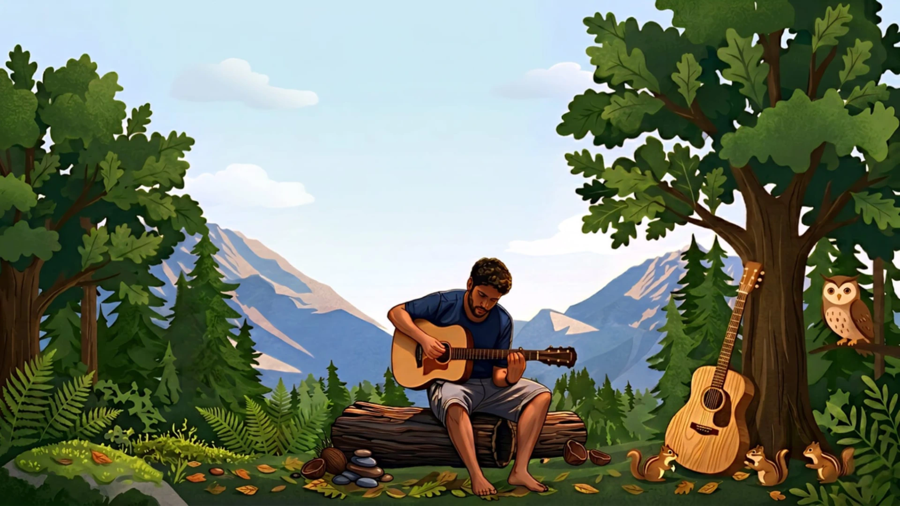

STEW OAK
Organic warmth of acoustic folk blended with atmospheric edges of alternative rock.

Where Natural Landscapes Meet Modern Existentialism
Stew Oak is an independent singer-songwriter and producer originally from Hayling Island and currently based in Northern Israel. Blending the organic warmth of acoustic folk with the atmospheric edges of alternative rock, his music captures the intersection of natural landscapes and modern existentialism.
Whether through Jack Johnson-inspired, sun-soaked "beach-folk" melodies or introspective lyrics, he pulls from an eclectic range of influences — from the classic melodies of The Beatles and the grit of Britpop icons like Oasis and Blur, to the hushed intimacy of Nick Drake, Alexi Murdoch, and emerging folk legend Chris Brain.
Featured Music
Happy Place
Demos & Acoustic Vault
Official Videos
Let's Connect
Music is best when it's shared. If you’ve discovered a great track lately, have an idea for a joint project, or just want to share your thoughts on the music or life, send me an email. I’m always open to new sounds and thoughtful conversations.
stewoak@gmail.com